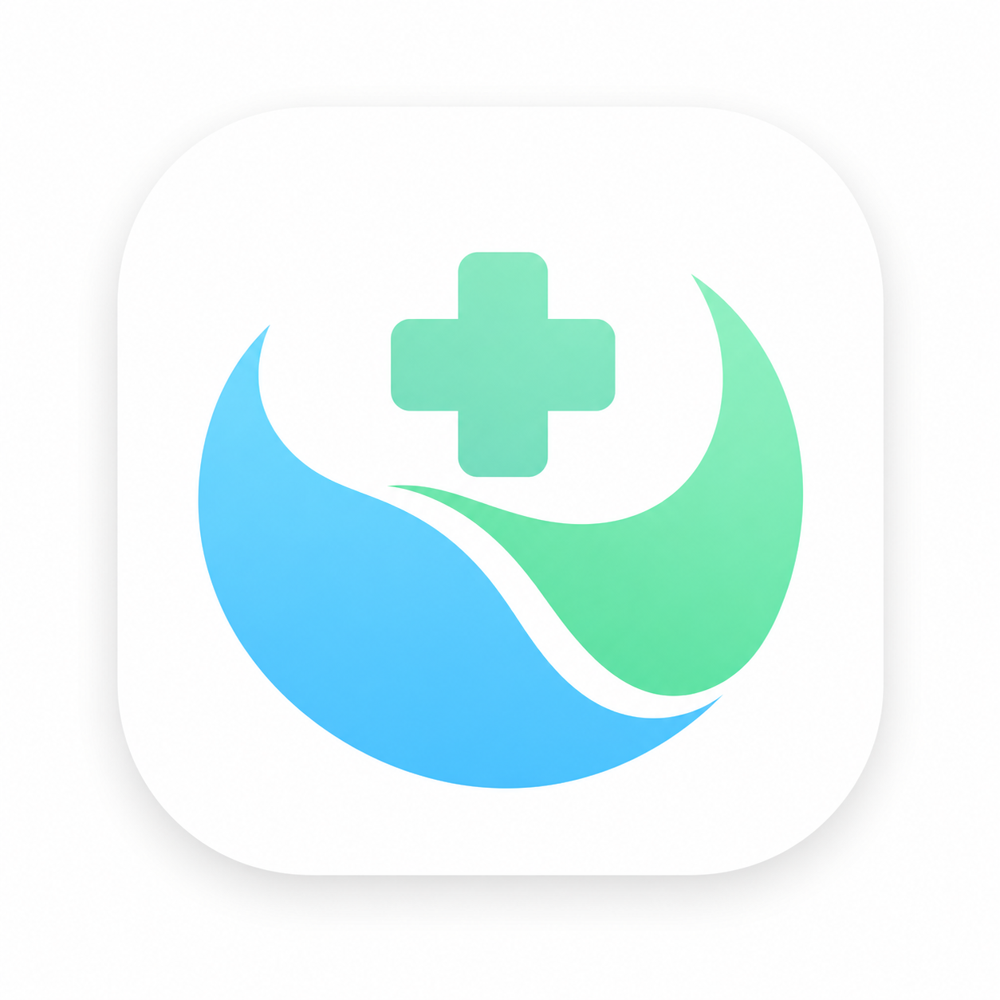

Vida+
Vida+
Voz ativa
Pausar
Silenciar
--:--:--
—
Bem-vindo(a) ao Hospital
Fique atento(a) à sua senha no telão e no seu celular.
Chamando agora
A000
—
Por favor, dirija-se ao local indicado
Destino
—
📢 Chamadas recentes
📢
Nenhuma chamada ainda
💬 Avisos
—
Seu destino
—
—
Mapa ilustrativo: a planta e as rotas desta unidade ainda precisam ser validadas.